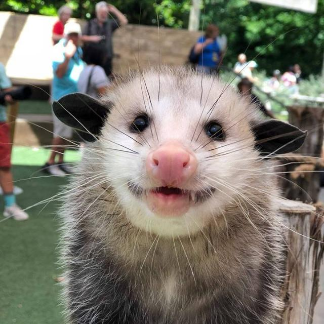

Hello World
Boas vindas!!

Esse sou eu :)
Futuramente quero me especializar em design ou áreas artisticas, estudar programação e fazer estágio como dev junior, trabalhar em alguma empresa grande ou entrar para um time de programadores e fundar uma equipe para trabalhar profissionalmente na área futuramente. Para isso vou fazer e tentar passar no vestibular da Fatec araras e encontrar trabalho para manter algum sálario e expêriencia profissional.